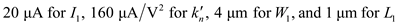
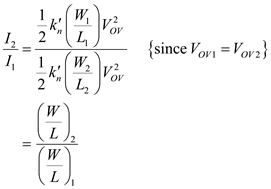
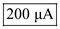
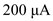
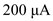
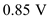
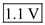
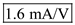
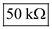

Step 1:
Refer to Figure 7.32 in the textbook for a cascode MOS current mirror circuit.
Write the expression for the current.
Substitute  in order to find the overdrive voltage, .
Step 2:
The overdrive voltages, . Hence the overdrive voltage, .
Find the ratio, by substituting in the ratio .

Substitute to calculate the .
Therefore, the output current is, .
Step 3:
It is known that the current . Since, the output current,  as indicated in the circuit diagram for a cascade MOS current mirror is same as the current, , the output current is also obtained as .
as indicated in the circuit diagram for a cascade MOS current mirror is same as the current, , the output current is also obtained as .
The expression for the gate source voltage is,
Substitute (since, , ) in order to find the value of .
Hence, the value of is obtained as 0.85 V.
Step 4:
It is known that . Since the currents are equal and the widths are equal, the gate source voltage, of the first component and the gate source voltage of the fourth component, are equal, . Substitute the relation between the gate source voltages,  in the expression, .
in the expression, .
Since , rearrange the expression.
Substitute  for  to find the value of .
to find the value of .
Therefore, the voltages are,  respectively.
respectively.
The lowest possible voltage at the output is when satisfies the condition, . The lowest possible output voltage is, . Since the gate source voltages,  and the currents, assume equal magnitude in their relation, the gate source voltage of the third component becomes same as the gate source voltage of the first one, .
and the currents, assume equal magnitude in their relation, the gate source voltage of the third component becomes same as the gate source voltage of the first one, .
The lowest possible output voltage is,
Substitute in order to obtain the value of .
Hence, the current-source operation is possible at the lowest voltage is, .
Step 5:
Write the expression for trans conductance, of the components .
The trans conductance of the first and the third components are equal, .
Substitute to get the value of .
Step 6:
Write the expression for the output resistance, for the first and the third components, .
Substitute

Hence, the values of and of and are,  and  respectively.
Step 7:
Write the expression for the output resistance.
Substitute
Hence, the output resistance, of the mirror is, .